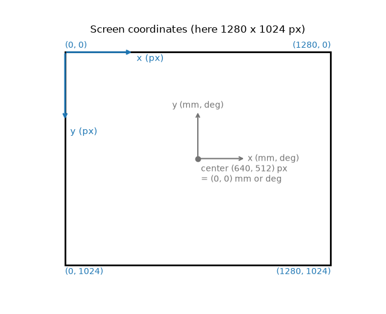
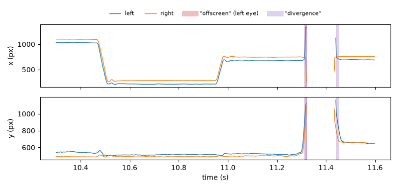
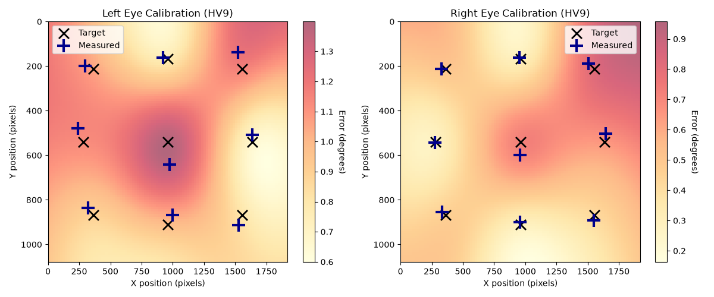
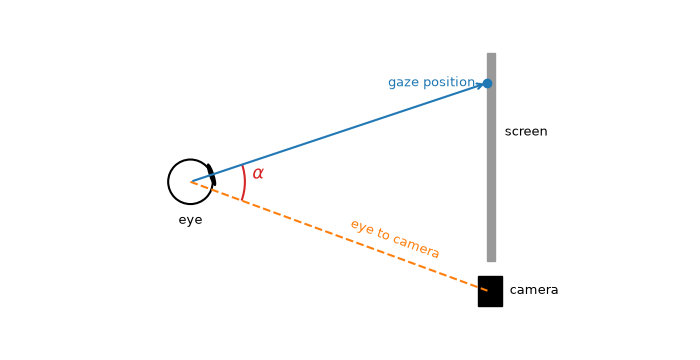

Gaze data and the experimental setup#
Besides pupil size, an EyeData object can hold the gaze position
of each eye: the channels left_x, left_y, right_x and
right_y. This page shows what is stored, how to describe the screen
and the camera, and the tools for gaze data. The methods for gaze data are
in the namespace d.gaze; the generic methods (cropping, masks,
segments, …) work on gaze channels as on any other channel.
The examples use the short example dataset, which has gaze and pupil data of both eyes:
import numpy as np
import pypillometry as pp
from pypillometry import u
d = pp.get_example_data("rlmw_002_short")
What is stored#
The gaze position is stored in screen pixels, as the eye tracker reports it: x from left to right, y from top to bottom (the origin is the upper left corner of the screen; this is the EyeLink convention). Samples in which the tracker lost the eye are NaN. The gaze plots draw the screen as it is seen, so y increases downward (see Plotting).

Positions in mm or degrees (e.g., for regions of interest or in the experimental setup) are relative to the screen center, with y upward; they are converted to pixels with the setup (see below).
Blinks are detected on the pupil only (see Preprocessing), so the gaze channels of a blink are not masked unless you copy the blinks to them (see below).
The experimental setup#
Many gaze tools need to know the geometry of the experiment: the screen
size in pixels and in mm, the distance between the eyes and the screen
and, for some corrections, the position of the camera. It is stored as an
ExperimentalSetup in d.experimental_setup and saved with the
object. set_experimental_setup() sets (or updates) it;
lengths and angles can be given with units:
d.set_experimental_setup(
screen_resolution=(1280, 1024), # pixels
physical_screen_size=(30 * u.cm, 20 * u.cm), # width, height
eye_to_screen_center=60 * u.cm, # viewing distance
)
d.experimental_setup # summary
Which parts are needed depends on what you do:
parameters |
needed for |
|---|---|
|
|
|
conversion to mm and visual angle, regions of interest in degrees |
|
a screen that is not centered or not perpendicular to the line of sight, the position of each eye |
|
the pupil foreshortening correction (see below) |
EyeData.from_eyelink() sets the screen resolution from the EDF
file; the other values are not in the file and have to be added. The
example datasets come with the screen size and the viewing distance (no
camera position).
Converting coordinates#
The setup converts between pixels, mm on the screen and visual angle (degrees from the screen center, along x and y):
s = d.experimental_setup
s.pixels_to_degrees(740, 512) # (2.24, 0.0): 100 px right of the center
s.degrees_to_pixels("1 deg", 0) # (684.7, 512.0)
s.pixels_to_mm(740, 512) # (23.4, 0.0) mm from the screen center
s.mm_to_degrees(10, 0) # (0.95, 0.0)
All of them take numbers or arrays, e.g., s.pixels_to_degrees(d.data["left_x"],
d.data["left_y"]) for a whole channel. See Units for how to give
values with units.
Masking gaze artifacts#
Detect and mask gaze coordinates that fall outside the screen boundaries. |
|
Calculate Euclidean distance between left and right eye coordinates and detect divergences. |
mask_offscreen()masks the samples outside the screen ("offscreen"layer of the x and y channels of each eye).mask_divergences()masks the samples where the two eyes look at very different points ("divergence"layer of all four gaze channels). The threshold is a quantile of the distance between the eyes (defaultthreshold=0.99,thr_type="percentile": the 1% most divergent samples) or a distance in pixels (thr_type="pixel").store_as="dist"also stores the distance as a channelboth_dist(eye"both").
d.gaze.mask_offscreen() # 0.2% per eye here
d.gaze.mask_divergences(threshold=100, thr_type="pixel", store_as="dist")
d.get_layer_intervals("offscreen", variables="x") # the periods, in ms
Like the blink detector, both replace their own layer when they run again,
so trying other thresholds does not add up masks.
mask_divergences() needs the gaze of both eyes.
Masks of the gaze and the pupil are separate. Off-screen and divergent
samples are masked on the gaze channels only, blinks on the pupil only.
To use one for the other, copy the periods with
mask_intervals() (into the "user" layer):
# mask the gaze during blinks
bl = d.pupil.blinks_detect().get_blinks(variables="pupil")
d.mask_intervals({"left_x": bl["left_pupil"], "left_y": bl["left_pupil"],
"right_x": bl["right_pupil"], "right_y": bl["right_pupil"]})
The opposite direction (the pupil where the gaze is off the screen) is shown in Missing data, which also explains how the layers are used by the analyses.
Combining the eyes: merge_eyes() with
variables=["x", "y"] averages the gaze of both eyes into mean_x
and mean_y (using the samples that are usable in each eye).
Off-screen and divergent samples often occur at the start and end of blinks, when the eye tracker loses the eye:

Plotting gaze data#
Plot EyeData as a heatmap. |
|
Plot EyeData as a scanpath. |
|
Plot a part of the EyeData. |
|
Plot spatial calibration data for one or more eyes in subplots. |
plot_heatmap() shows where the eyes looked (a 2D
histogram over the screen), plot_scanpath() the path
of the gaze over a short time, colored by time, and
d.plot.plot_timeseries(variables=["x", "y"]) the coordinates over
time. All of them draw the screen if the setup is known. See
Plotting and the tutorial Plotting pupillometric data for exploration.
Calibration#
EyeData.from_eyelink() reads the calibration and validation results
of the EDF file into d.calibration (one SpatialCalibration per
eye: the target points, the measured points and their errors).
plot_calibration() shows them, and the quality report
lists the calibration errors (see Data quality). Here, for a recording with
a 9-point validation (black crosses: targets, blue plus signs: measured
gaze; the background shows the error between the points):
d = pp.EyeData.from_eyelink("../data/test.edf") # data folder of the repository
d.calibration # {'left': <SpatialCalibration: left eye, HV9, n=9, ...>, ...}
fig, axes = d.plot.plot_calibration(figsize=(6, 5))

Regions of interest#
CircularROI and RectangularROI describe regions of the
screen, in pixels or, with the setup, in mm or degrees. They test which
samples fall into them and can be drawn into the gaze plots (rois=):
roi = pp.CircularROI.from_degrees((0, 0), 2, d.experimental_setup) # 2 deg around the center
inside = roi.contains(np.column_stack([d.data["left_x"], d.data["left_y"]]))
d.plot.plot_heatmap(rois=[roi])
For event-related analyses, seg.gaze of the segments
(get_segments()) uses ROIs: the share of trials in which
the gaze is in an ROI over time, and the dwell time and first entry per
trial. See Regions of interest and the tutorial Gaze in regions of interest around events.
Pupil foreshortening#
The pupil looks smaller when the eye looks away from the camera. With the
camera position in the setup, d.pupil.fit_foreshortening() estimates
the camera angles from the data and d.pupil.correct_foreshortening()
corrects the pupil size for the gaze position. This is experimental as
well; see Correcting pupil foreshortening.
The camera sees the pupil at the angle α between the eye-to-camera line and the gaze direction; the pupil looks smaller by about cos α:

What is not included#
pypillometry does not detect fixations or saccades, and the
saccade and fixation events of EyeLink files are not read. If you need
them, read them with the eyelinkio package (or your eye tracker’s
software) and add them as events (see Events, intervals and segments).